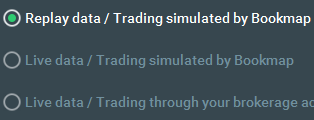
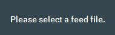
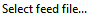
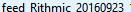
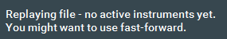
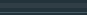
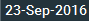
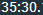

import shutil import org.sikuli.script import os import time #setup preconditions LOAD_TIMEOUT = 30 OPEN_TIMEOUT = 10 #create log file scriptDir = getBundlePath() newDir = "logs"; makeDir = os.path.join(scriptDir, newDir); if not os.path.exists(makeDir): os.mkdir(makeDir); timestring = time.strftime ('%d-%m_%H-%M-%S') logsFile = scriptDir + '\\logs\\' + timestring + '.txt' #Debug.setUserLogFile(logsFile) Debug.setLogFile (logsFile) Settings.ActionLogs = True Settings.InfoLogs = True Settings.UserLogs = True Settings.UserLogPrefix =os.path.basename(scriptDir) Settings.UserLogTime = True Settings.DebugLogs = True Debug.on(3) Debug.log (3, "custom debug message with verb =3") Debug.user("beginning of the script") Debug.log (1, "custom debug message with verb = 1") #END setup preconditions App.open("c:\\Program Files\\Bookmap\\BookMap.exe") waitVanish(,LOAD_TIMEOUT) wait(,LOAD_TIMEOUT) click() wait(,OPEN_TIMEOUT) BMAppInst = App.focus("Bookmap") click() wait(,OPEN_TIMEOUT) doubleClick() waitVanish(,LOAD_TIMEOUT) wait(,LOAD_TIMEOUT) if not exists(): hover() wait(3) hover() click() timerRegion = find() Settings.WaitScanRate = 20 Settings.ObserveScanRate = 20 #search image 20 times per second Settings.MoveMouseDelay = 0 timerRegion.right(100).wait(Pattern().similar(0.95),60) print("13:35:30 recognized") click() BookmapWindow = App.focusedWindow() regionImage = capture(BookmapWindow) shutil.move(regionImage, os.path.join(r'E:\Projects\Sikuli\screenshots', 'scr1.png')) click() print("wait for 13:36:10 ") wait(40) #click(Pattern("1475494291644.png").targetOffset(7,18)) click(Pattern().targetOffset(-18,21)) click() BookmapWindow = App.focusedWindow() regionImage = capture(BookmapWindow) shutil.move(regionImage, os.path.join(r'E:\Projects\Sikuli\screenshots', 'scr2.png')) wait(5) click() print("rewind back to 13:35:30 ") wait(3) #BMAppInst = App.focus("Bookmap Replay") #BMAppInst.close() click() wait(5)